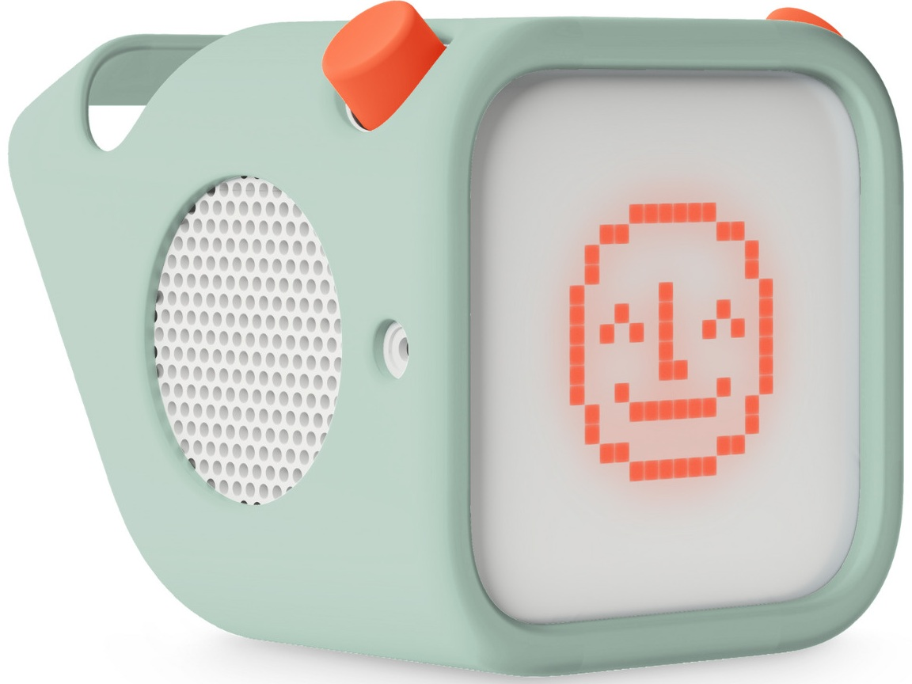

A choose your own adventure game for the Yoto Player. A Python server streams live audio to a physical card. When the card is inserted in the player one of three random stories are picked. This story is read out and at certain parts of the story it pauses and waits for player feedback. This is an audio game that uses the Yoto's two physical buttons and a voice reading the story and giving the player different options.
The full design report for this project, including the design pillars, audience, core gameplay breakdown, and pacing decisions, is available as a download further down this page.
Design
The hardest part of this project wasn figuring out how to get real interactivity out of hardware that was never built for it. The Yoto's buttons only move forward and backward through the tracks on a card. They don't support jumping to two different places from one point.  So instead the server listens to live MQTT events from the player. It works out which button the player pressed based on where they land. It then immediately overrides playback to send them to the next part of the story based on what the player chose. This uses the same system as the Yoto Trivia Game so it was easier to setup this time wiht the pre existing knowledge.
So instead the server listens to live MQTT events from the player. It works out which button the player pressed based on where they land. It then immediately overrides playback to send them to the next part of the story based on what the player chose. This uses the same system as the Yoto Trivia Game so it was easier to setup this time wiht the pre existing knowledge.
Having the audio match the game mattered just as much as the logic so I carefully picked a suitable narrators voice. The story is streamed in real time using a text to speech voice. Depending on the player's choice different events and endings cna happen throughout the story so no two playthroughs ever sound quite the same.

Ten questions per game felt like the right length, long enough to feel like a proper game but short enough that an 8 to 12 year old won't lose interest halfway through.You can view the code here if you want to see how it works.